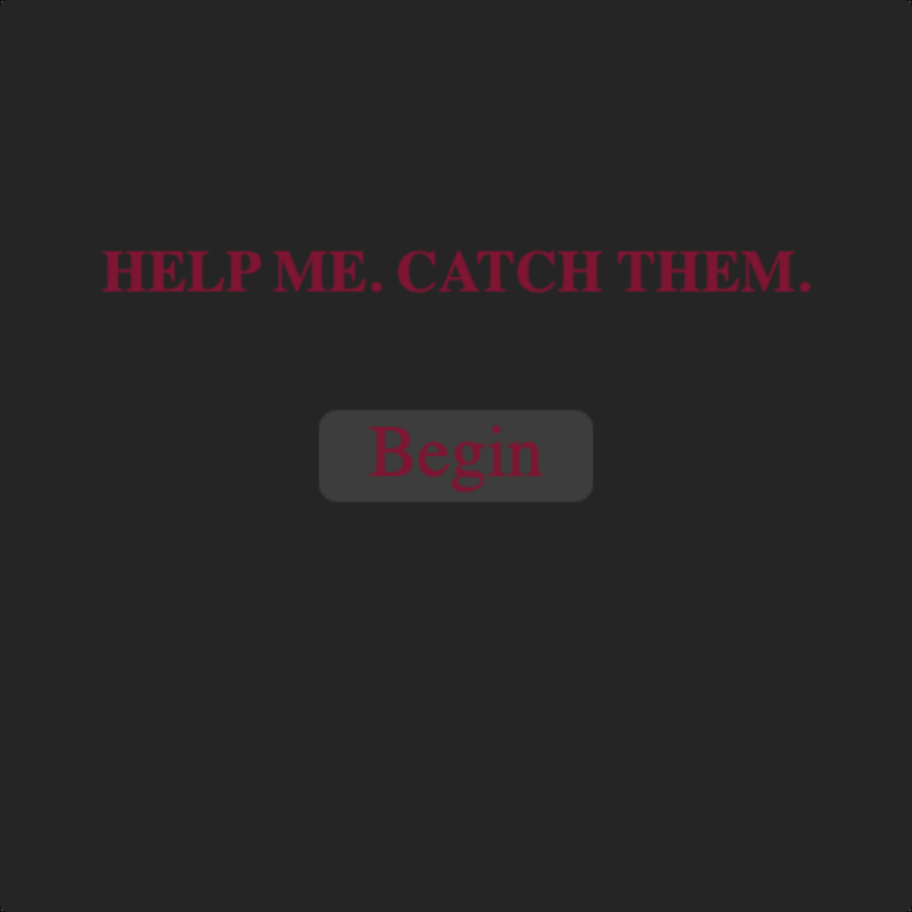
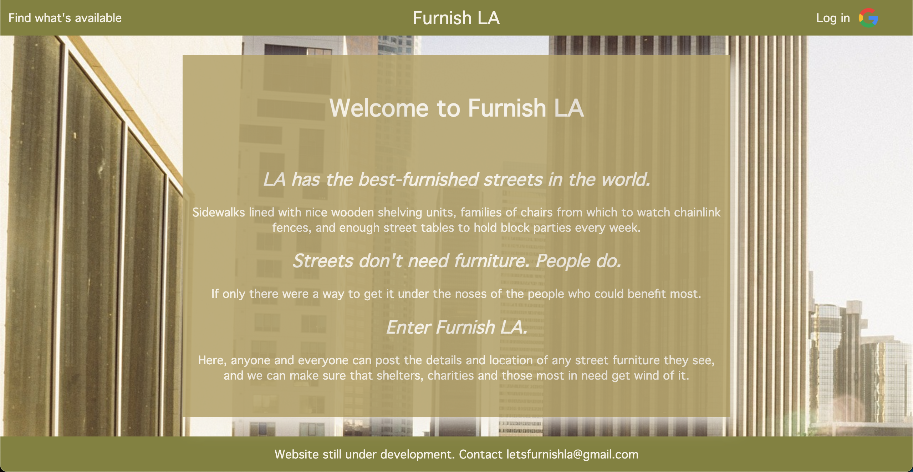
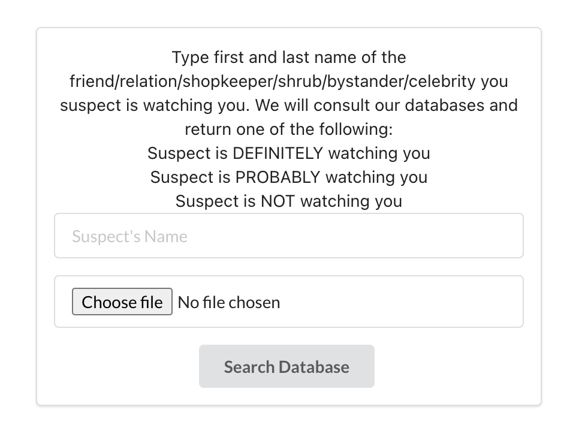

01/16/2023 Note: It's come to my attention that Heroku has ceased hosting sites for free, and so the below links are currently
broken. Which is super helpful for a portfolio I know. I'll be porting them somewhere else in the coming days. Apologies, and-
in the meantime- please do reach out using the below linkedIn link, and I can provide screenshots, code, or whatever else might
interest you. Thank you!
Welcome to
Ollo Codes
I'm Ollo. And I code.
About Me
Hi! I'm Ollo Clark, a software engineer with a background in theater, education,
and management consultancy. A fascination with language, logic,
and puzzles allows me to tackle difficult or opaque problems with curiosity,
energy and humor. Six years of stage work taught me real teamwork, while eight years of teaching
taught me communication, connection, and patience.
I recently graduated from General Assembly's Software Engineering Intensive.
Below, you can find several projects, each built in no more than five days.
Enjoy!
Project One: CATCH THEM
A spooky spin on the traditional wordsearch

Something is asking for your help...or is it a demand?
Assist as you will, but all might not be as it seems...
CATCH THEM is the result of going from never having written a line of code to having coded for three
weeks. I'm also confident it's the only
wordsearch in the world with a secret alternative ending.
I'm a big thriller/horror fan, and I like putting
new twists on old classics. Help catch them, if you dare.
Project Two: Furnish LA
A database to track furniture left on the streets and sidewalks

Streets don't need furniture. People do.
We were asked to build a CRUD-fulfilling database as a project, and I didn't want to just submit
something for the sake of it; I wanted to build something useful. I aim to make Furnish LA fully mobile,
and my intention is to add geocentric photo functionality.
For our group project, we were told to create a Django app, and in a time of volatile petrol prices,
we decided to build something useful for the community. For the project, the information had to be user-submittable,
which we recognize isn't the ideal form for a production app. We therefore sourced a paid-for gas price API,
which we have waiting in the wings, should we ever take the project further. It is also optimized for mobile.
I am endebted to my fantastic team members- Elory He, Jennifer Dinh, and Mario Hernández Ortega- with whom
it was an absolute delight to work. In the dividing up of our duties, I took up the mantle of scrum and GitHub
manager, which was a whole new satisfying whirl of pull request etiquette!
They're not watching you (pl.), they're watching YOU (sing.)

For our final project, we were asked to build a complete MERN stack app, implementing a 'likes'-type
fucntionality. I chose to create a Kafkaesque, mock-governmental portal. The design is minimal, and the
paranoia is overbearing.
I had fun playing with user expectations on this one, and want to take it further, creating a gamified
lesson on internet and data safety.